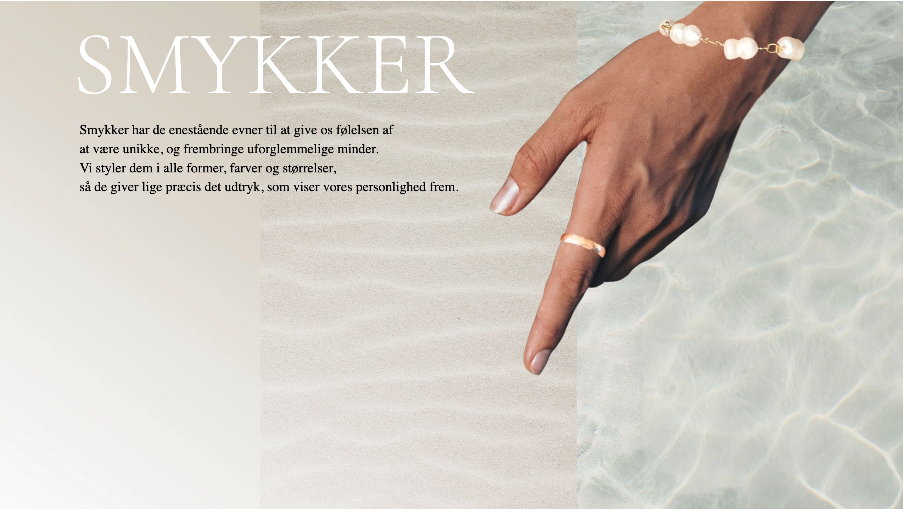
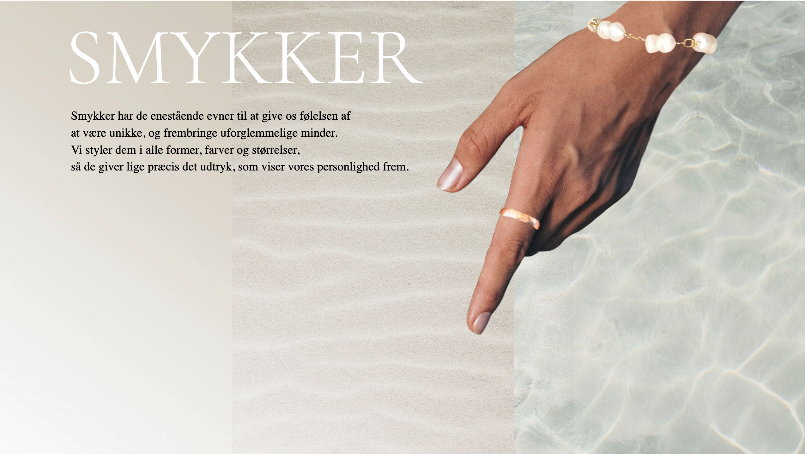

Tema 2
Visitkort
På dette tema havde vi en opgave for, hvor vi skulle lave et visitkort i XD, for at lære programmet at kende.
Responsive_v2
På dette tema har jeg lært at kode mit første website. Vi fik tildelt nogle wireframes og layoutdiagrammer, som vi byggede hjemmesiden op af. Der var nogle forskellige krav til f.eks. billeder. Vi lærte her hvordan man justerede billedestørrelser i pixels, og hvordan man tilpassede formaterne, så de passede ind i de valgte grids. Vi lærte også en masse om Photoshop på dette tema. Det har jeg især haft stor udnyttelse af til at lave mit Splashbillede, som fungerer som forsiden på mit website. Jeg benyttede mig af forskellige rettighedsfrie billeder, som jeg redigerede og stylede sammen til et nyt billede, så det ramte den stil jeg gerne ville have frem
Se Responsive_v2 site her
 

Styling i CSS
Til vores eget website lærte vi at style vores indhold i css. Vi brugte både grids til at lave flotte layouts og fonte samt farver til at skabe et flot design med gennemgang af den samme stil på hele websitet. Vi lærte også at lave vores website responsivt ved at kode hjemmesiden som mobile-first. Dette lærte vi ved hjælp af media-querys. Jeg synes det var svært at forstå brugen af disse i starten, hvilket også gav mig besvær med at lave et responsivt website til aflevering af Responsive_v2. Efterfølgende har jeg prøvet at sætte mig mere ind i brugen af media-querys, og har især lært en masse på tema 5, hvor vi skulle redesigne en eksisterende virksomheds hjemmeside.